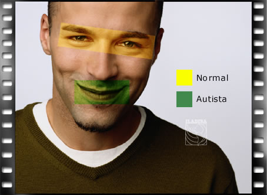
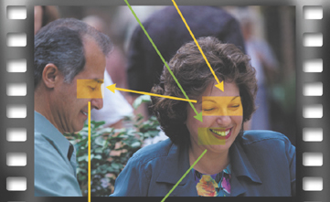

¿Hacia donde miran los autistas?
Texto presentado en ILADIB.com (http://www.iladiba.com/) el 1 de agosto de 2002
El autismo es una alteración del neurodesarrollo que se manifiesta en etapas tempranas de la infancia. Se caracteriza por una marcada inhabilidad de socializar y entender a otras personas, intuir sus sentimientos y entablar relaciones. Los niños autistas con frecuencia presentan problemas de lenguaje, aprendizaje y conductas bizarras, sin embargo es la alteración social lo que define el diagnóstico.
Los problemas del lenguaje en niños autistas están fuertemente relacionados con el cociente intelectual. Gracias a los medios de comunicación y las películas muchas personas piensan que los niños autistas son genios, pero esto está lejos de la realidad, tan sólo un tercio o un cuarto de ellos tienen inteligencia normal, los restantes sufren retardo mental. Se ha visto que a menor cociente intelectual más severas son las perturbaciones del lenguaje.
Algunos expertos en el tema piensan que la disfunción social se debe a deficiencia en las funciones ejecutivas, secundaria a alteraciones de la corteza prefrontal dorsolateral. Se llama funciones ejecutivas al grupo de capacidades individuales que permiten a la persona resolver un problema para alcanzar un objetivo. En el caso específico de los niños autistas se cree que la alteración básica radica en la capacidad de planeación.
Es frecuente en ésta enfermedad observar dificultades para planear y organizar actividades diarias y repuestas equívocas repetitivas antes los estímulos.
Es frecuente que los niños autistas eviten el contacto visual, pruebas neuropsicológicas muestran alteraciones en la percepción de caras, debido a la inexperiencia en observar caras por la misma evasión visual. Estudios neurofuncionales han demostrado disminución en la activación del giro temporal inferior mientras el sujeto autista realiza tareas de reconocimiento de caras.
Algunos investigadores creen que las personas autistas son incapaces de percibir los estados mentales de otras personas, tales como creencias, intenciones, sentimientos o deseos y por lo tanto no se pueden explicar y predecir el comportamiento de los demás, limitando sus posibilidades de interacción. Otros piensan que ésta teoría no es del todo cierta, y sugieren que la alteración se da por una tendencia a imponer de forma aleatoria significado social a estímulos visuales ambiguos.
Un estudio reciente, publicado en el American Journal of Psychiatry utilizó una técnica nueva de seguimiento de la mirada en sujetos autistas e individuos normales. Los analizaron mientras veían una película cargada de emociones y encontraron que los sujetos autistas no enfocaban las expresiones emocionales. Por ejemplo, en una escena sin diálogo donde aparece una mujer sorprendida con los ojos muy abiertos, las personas normales miraban hacia los ojos de la mujer, mientras que los autistas enfocaban su boca inexpresiva. En general, en cualquier situación los pacientes autistas enfocan la boca más que los ojos cuando miran una cara (figura 1).
Figura 1. Foco visual de una persona normal comparada con la de un sujeto autista
También encontraron que en el transcurso de un dialogo, los individuos autistas observan sólo al personaje que está hablando, siendo que la interpretación adecuada de las situaciones sociales requiere de la lectura simultanea de ambos interlocutores (figura 2).
Figura 2. El individuo autista sólo observa al personaje que está hablando, ignorando la expresión facial del interlocutor.
Para probar que los sujetos autistas prestan menor atención a los estímulos visuales de contenido social, utilizaron escenas cargadas de estímulos visuales físicos y encontraron que los individuos con autismo respondían más rápido que el grupo de control al estímulo físico pero ignoraban las señales sociales. Por ejemplo, en una escena donde un hombre coge un arma, los autistas miraron más rápido el arma y se enfocaron ahí, mientras la mirada de los sujetos normales oscilaba entre el sujeto y el arma en un intento de descifrar la intención del personaje.
Por último, encontraron que los autistas ignoran el lenguaje no-verbal. Por ejemplo, en una escena donde un hombre mira un cuadro y luego pregunta quién lo pintó, los individuos normales miraron el cuadro en cuanto el personaje lo miró, mientras que los autistas esperaron no lo hicieron hasta oír el comentario verbal.
En conclusión, las diferencias más notables entre individuos sanos y autistas fueron: preferencia visual por la boca, omisión de claves comunicativas y sociales y preferencia por imágenes físicas (tabla 1).
| Autistas | Individuos sanos |
|---|---|
|
|
Referencias
Klin, A.; Jones, W.; Schultz, R.; Volkmar, F. R.; Cohen, D. J.: Defining and Quantifying the Social Phenotype in Autism. American Journal of Psychiatry 2002; 159(6):895–908
La edición y mantenimiento de EspectroAutista.Info se ha descontinuado. Para conocer todos los detalles lea la última noticia.
- Autismo, síndrome de Asperger y trastorno semántico-pragmático: ¿Donde están los límites?
- Comprendiendo las dificultades en el aprendizaje no verbal
- ¿Hacia donde miran los autistas?
- La comprensión verbal en el autismo: ¿alteraciones morfosintácticas, semánticas o conceptuales?
- ¿Qué es el Trastorno del Aprendizaje No Verbal?
- Trastornos del aprendizaje no verbal (revision de 1997)